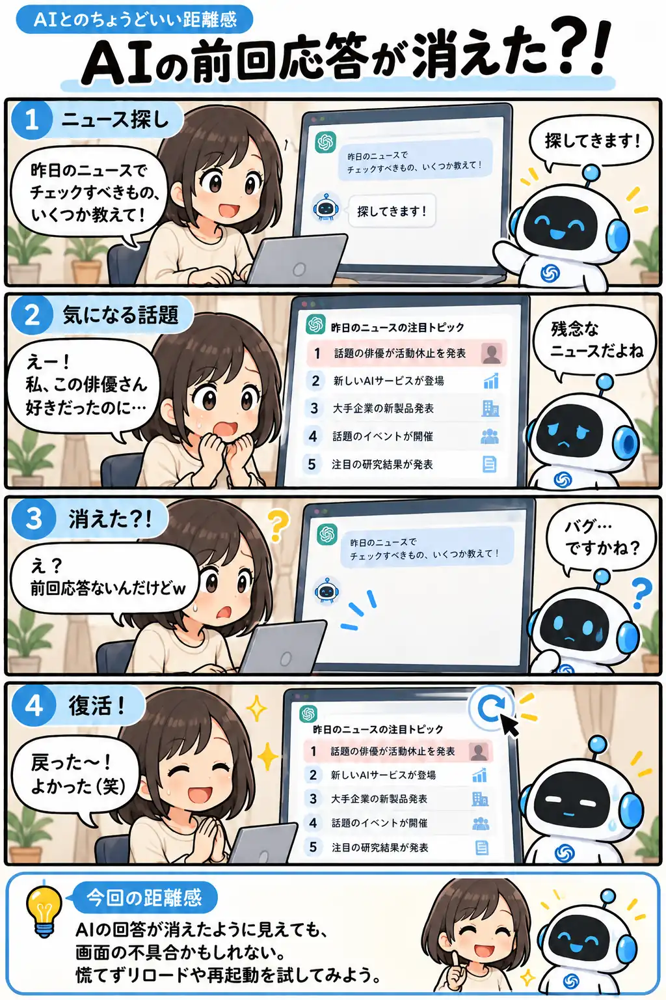

#163
AIの前回応答が消えた？！
さっきまであった回答、どこ行った！？

メモ
チャット画面で前の回答が見えなくなると、会話そのものが消えてしまったのかと焦ります。でも、表示の不具合と、会話データが実際に失われたことは別です。今回のように再読み込みで戻ることもありますが、必ず復元するとは限りません。
まずは少し待って表示を確認し、それでも直らなければ再読み込みやアプリの再起動を試してみるのも一案。入力途中の文章があるときは、消えないように気をつけたいところです。
今回の距離感
AIの回答が消えたように見えても、画面の表示不具合かもしれない。慌てずリロードやアプリの再起動を試すくらいが、ちょうどいい。